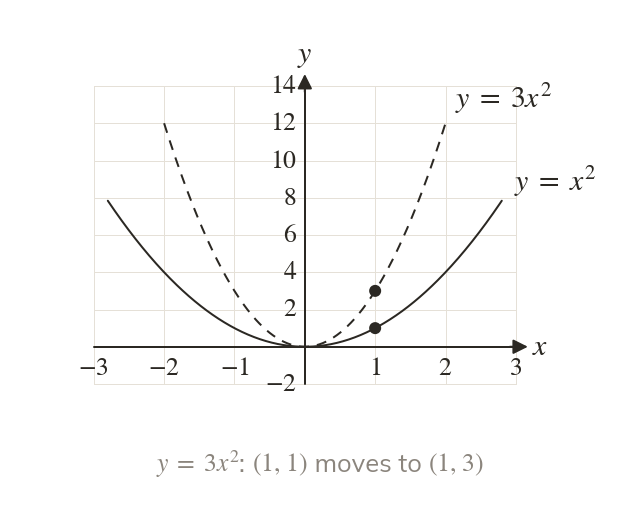
stretches vertically
multiplies every y-value of by a vertical stretch with scale factor
Points on the x-axis stay where they are.
A stretch or a reflection changes the shape of , or in a way its equation predicts. A number outside the function scales the y-values, and one inside scales the x-values. With translations from this is everything does to a graph given only as a sketch.
Work down the page at your own pace. Write every answer in your book first, then click to check it.
Read each card, then follow the worked examples one step at a time.

multiplies every y-value of by a vertical stretch with scale factor
Points on the x-axis stay where they are.
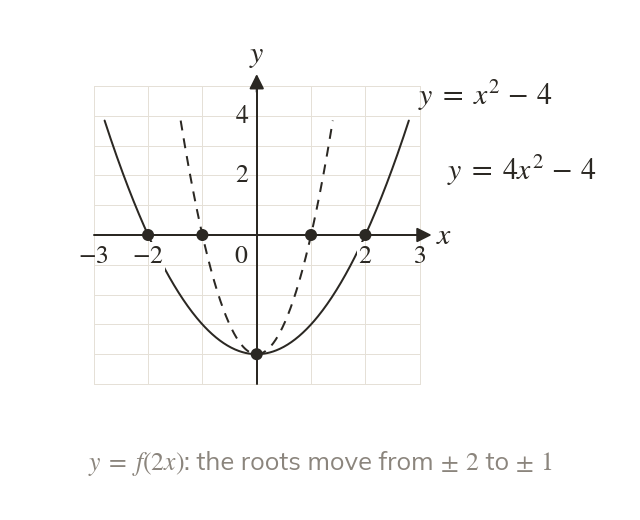
With ,
Its roots are and half of and so every x-coordinate is divided by
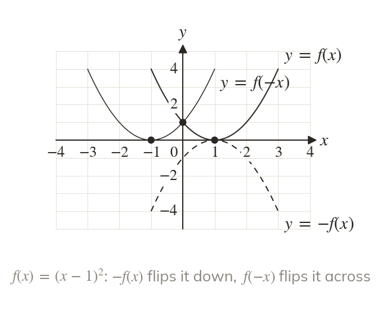
With , is a reflection in the x-axis. is a reflection in the y-axis.
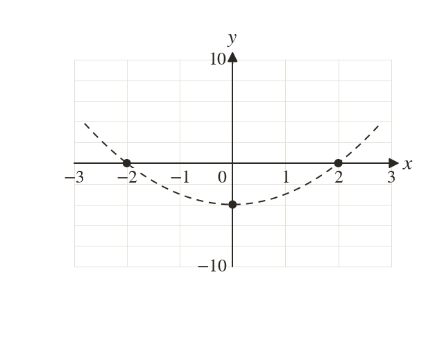
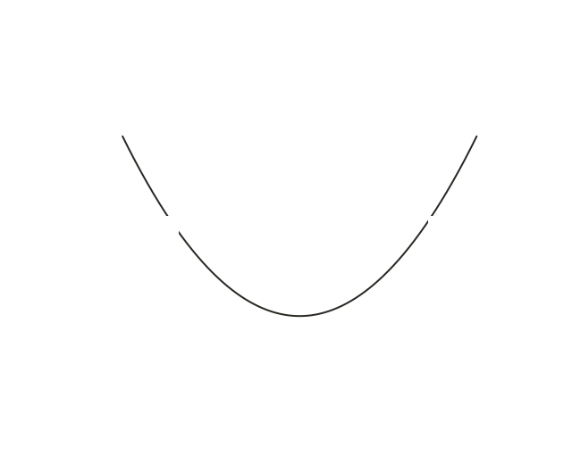
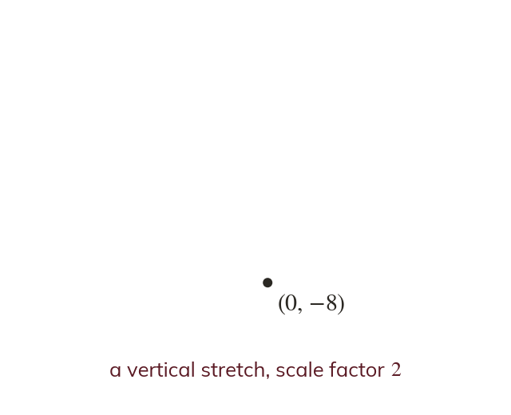
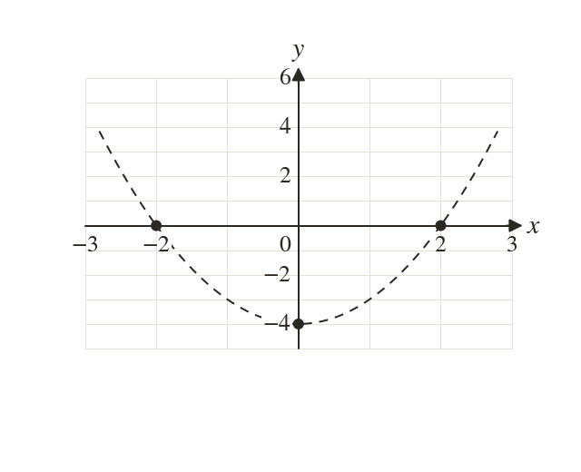
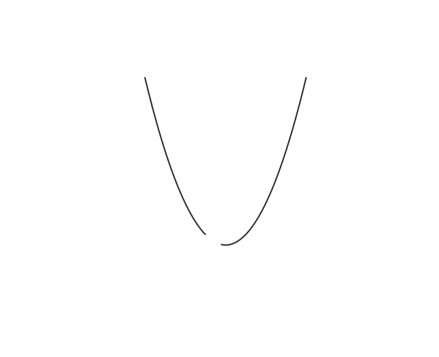
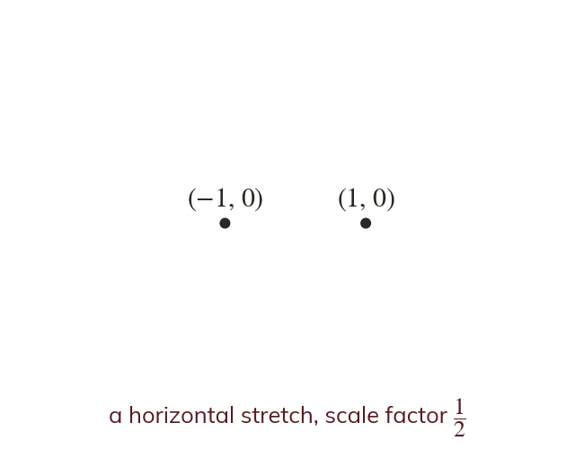
Pick an answer. If it's wrong, the feedback tells you which mistake it was.
Write the blanks in your book first, then tap each one to check.
Read each card, then follow the worked examples one step at a time.
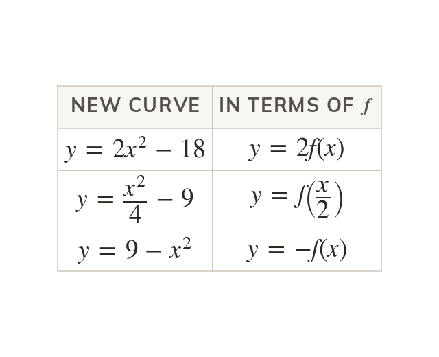
Write the new equation in terms of
Then is a vertical stretch, a horizontal stretch with scale factor and a reflection in the x-axis.
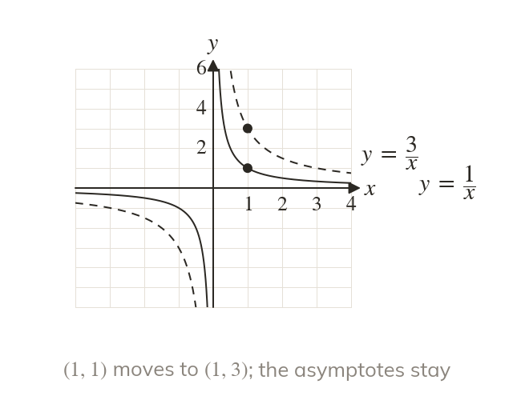
is a vertical stretch with scale factor
The asymptotes and do not move, because is still
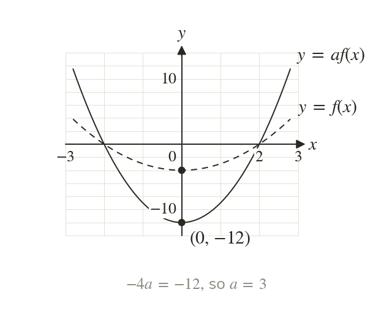
With , meets the y-axis where If that point is then so
Pick an answer. If it's wrong, the feedback tells you which mistake it was.
Write the blanks in your book first, then tap each one to check.
Finished? Next lesson: 4.7 Transforming Functions.
For each skill, tap the one that is true for you today. Your Revise pages start with anything you mark Not yet.
Your ratings are saved on this device only.
Log in, then search for a code to practise that skill.